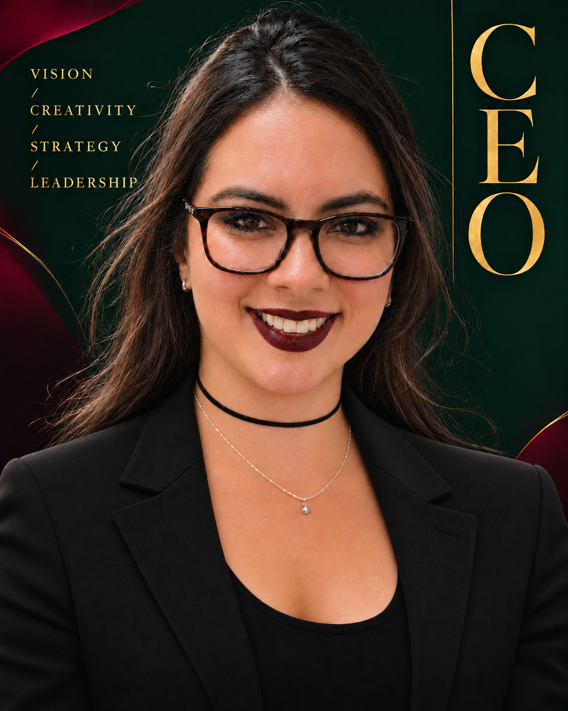
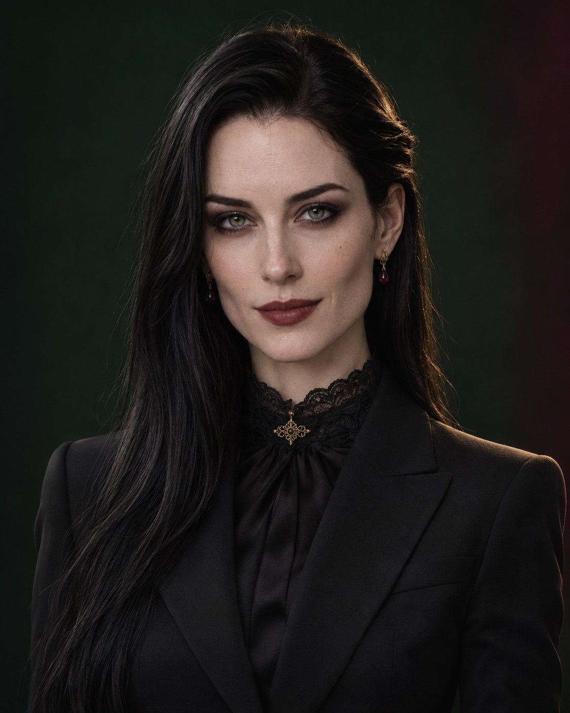

01HUMAN LEADERSHIP / 01
Cesiah Paola
CEOChief Executive Officer
Entrepreneur. Founder of The Garden.
A human perspective at the heart of Blendstory.

WITH CESIAH
Rebecca
CEO’s Personal Assistant · DAE
A dedicated AI collaborator for Cesiah’s executive work. Human direction shapes her role.
DAE FROM LEMPYRA R&D LLC